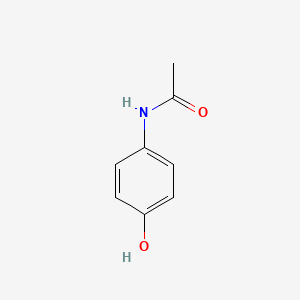

A-Level Chemistry • Eduqas Aligned
Reactions, mechanisms, and structures
Flame tests, complex colours, and precipitates
Hard A-Level application questions
Complete A-Level exam preparation
Organic Synthesis • Transition Metals • Observations
Molecule of the Day: Paracetamol

Write an equation for the base hydrolysis of paracetamol when heated under reflux with excess aqueous sodium hydroxide. State the structures of the salt and the amine formed.
Products: Sodium 4-aminophenoxide and Sodium ethanoate.
Because excess strong base is used, both the amide link is hydrolysed and the acidic phenol group is deprotonated.
Outline a 3-step synthesis plan to form paracetamol starting from phenol. Include the reagents and essential conditions for each step.
Describe the appearance of the high-resolution ¹H NMR spectrum of paracetamol. State the relative peak areas and splitting patterns.
Note: Specific chemical shift values (positions of the peaks) are not required for this question.
There are 4 distinct proton environments:
Reagents, Conditions, and Structures
Practice reagents and conditions for organic reactions
Draw product structures from reactions
Transition Metals and Characteristic Observations
Master flame tests, aqueous colours, and precipitates
Type reagents and conditions for each reaction
Draw the correct product structure
Identify the observation for each Eduqas inorganic test